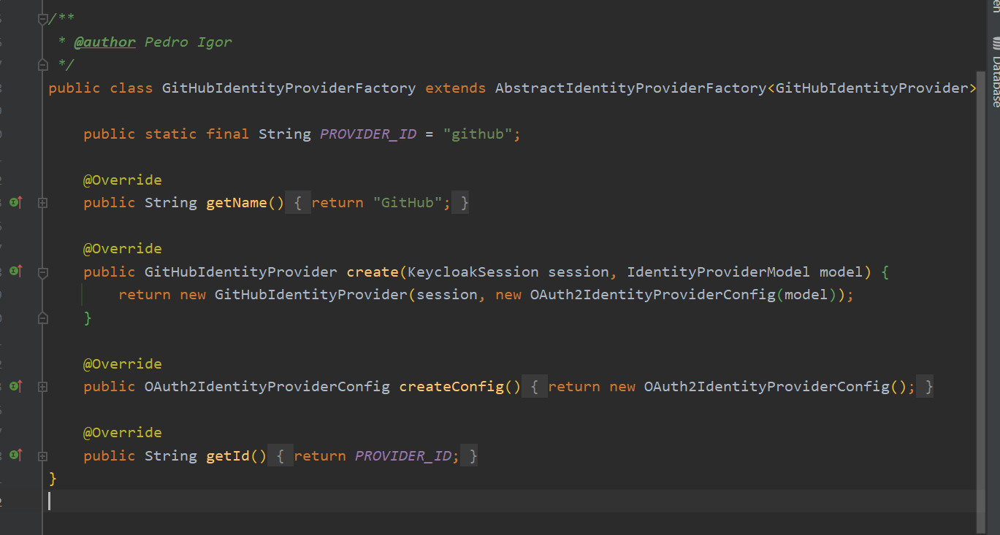
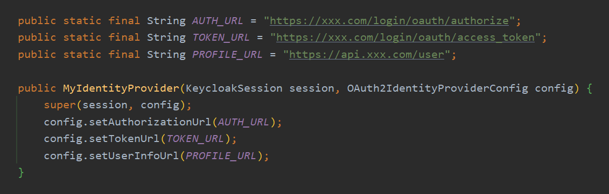
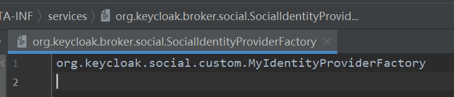
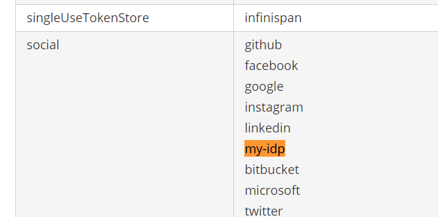

Keycloak 配置自定义社交帐号登录组件
由于 Keycloak 由红帽开发维护，所以其自带的 Social Identity Providers 都是国外的平台。现有需求对接公司 SSO，且由于国内 OAuth2 协议实现均不标准（公司的也是），所以无法使用 Keycloak 的 OpenID Connect 自定义接入，需要自己扩展 Identity Provider 实现。和国内的微信、钉钉、飞书等系统接入代码类似，但发现现有的接入组件没有实现 UserAttributeMapper，且版本变动，代码并不兼容，所以基于 Github 的组件进行参考实现。
Keycloak 使用当前最新版：16.1.0
一、自定义 IdentityProvider
0. 引入依赖
引入 Keycloak 相关依赖，依赖版本要与使用的 Keycloak 版本保持一致，scope 使用 provided 即可。
1 | <dependencies> |
0.5. 自定义 IdentityProvider
由于后续需要，我们先新建一个 IdentityProvider 放在这里。
1 | public class MyIdentityProvider extends AbstractOAuth2IdentityProvider<OAuth2IdentityProviderConfig> |
1. 自定义 IdentityProviderFactory
我们先来看一下 GitHub 的 GitHubIdentityProviderFactory，很简单，有一个唯一的 PROVIDER_ID，然后 getName 方法返回了一个名称用于展示。

我们照着改一下即可。
1 | public class MyIdentityProviderFactoryFactory extends AbstractIdentityProviderFactory<MyIdentityProvider> implements SocialIdentityProviderFactory<MyIdentityProvider> { |
2. 自定义 IdentityProvider
先定义并在构造时传入 Authorize、Token 及 Profile 的 Url。

重写必须要求实现的抽象方法
重写 getDefaultScopes 的抽象方法，返回自定义 SCOPE。
按需重写方法
首先重写 supportsExternalExchange方法，写死返回 true。这个官方文档也没有找到注释，但是各实现类均这么重写的，所以这里我们也一起重写。
由于我们继承了 AbstractOAuth2IdentityProvider，剩下的可以直接看抽象类的实现，按需重写非标准定义下无法使用默认实现调用的方法。
比如我需要对应自己系统返回的 User 和 Keycloak 的 User 对象的字段映射关系，所以重写 extractIdentityFromProfile 方法。这个方法也是默认空实现，一定要重写的。我们可以直接拷贝 GitHub 的实现再进行修改，同时，如果我们需要额外存储用户信息，可以使用 setUserAttribute 方法进行。
1 |
|
3. 重写回调方法
可以发现，我们之前重写的方法，都是接受到回调之后获取 token、获取用户信息的逻辑，如果我们的回调接口传参也不是标准实现的话，那么我们可以重写回调方法。
自定义 Endpoint
编写自定义 Endpoint 类，继承 AbstractOAuth2IdentityProvider 内部 Endpoint 类。然后重写 authResponse 方法，自定义接收参数，然后仿照默认实现，通过 authorizationCode 换取用户信息并通过 callback.authenticated(federatedIdentity) 返回。
注册自定义 Endpoint
重写 AbstractOAuth2IdentityProvider 的 callback 方法，返回自定义 Endpoint。
1 |
|
4. 注册 IdentityProviderFactory
在 resources 文件夹下，新建 MEAT-INF 文件夹，并在其下面建立 services 文件。新增 org.keycloak.broker.social.SocialIdentityProviderFactory 文件，在里面直接填写 MyIdentityProviderFactory 的全限定类名即可。

大体流程就是这样，OAuth2 认证后回调默认的 EndPoint 类的 authResponse 方法。如果大体流程标准，且回调参数标准，可以直接参照默认实现，按需重写所调用的 IdentityProvider 方法；如果回调参数会流程不标准，则需要自定义 EndPoint 并进行注册，再重写 authResponse 方法。
二、自定义 IdentityProvider 配置页
在新建/编辑 IdentityProvider 时，页面元素是可以配置的，我们可以按需增减页面需要填写的字段。
首先打开 Keycloak 路径下的 themes\base\admin\resources\partials\ 文件夹，我们还是将 realm-identity-provider-github.html 及 realm-identity-provider-github-ext.html 复制并重命名为 realm-identity-provider-my-idp.html 及 realm-identity-provider-my-idp-ext.html。如果不需要自定义，那么保持原样即可。如果需要修改页面字段展示，打开 realm-identity-provider-my-idp.html 文件，将文件内容替换为 realm-identity-provider-social.html 文件的内容，然后再对其进行修改即可。我们可以看到，默认页面就是引用了这个文件的内容。
三、部署 jar 文件
以 standalone 模式为例：
将打包后的 jar 文件复制到 standalone\deployments\ 文件夹，不需要重启服务，Keycloak 会自动热部署，并在同级目录生成 文件名.deployed 文件。
如果后续调用时出现 问题，可以参考 NoClassDefFoundError in a provider jar 在 maven-jar-plugin 插件配置依赖即可。
四、使用自定义 IDP
回到 Keycloak 后台，右上角点击 Server Info，切到 Providers Tab，如果在 social 栏看到了 my-idp（即上面定义的 provider id），说明部署成功，在 Identity Providers 后台正常新增即可。

五、自定义 UserAttributeMapper
由于之前我们需要额外储存用户信息，所以在重写 extractIdentityFromProfile 方法时，使用了 setUserAttribute 方法设置自定义属性。但由于 Keycloak 是冗余的用户数据，我们希望用户每次登录后，都可以自动更新用户信息。我们当然可以在 IDP 的配置中设置 Sync Mode 为 force 来每次更新用户信息，但此时只会自动同步更新 User 中 Details Tab 下的基本信息，不会再次同步 Attributes。
正常我们就会想到，可以通过设置 IDP 的 Mappers 来进行属性的放置，结果就会发现，Mapper Type 只有三个 Hardcoded 开头的硬编码的 Mapper。所以为了能够重新使用 Attribute Importer，需要我们自定义一个 UserAttributeMapper。
1. 自定义 UserAttributeMapper
仍然参考 GitHub 的 GitHubUserAttributeMapper，直接拷贝过来，将 PROVIDER_ID 改成自己的即可。
1 | public class MyUserAttributeMapper extends AbstractJsonUserAttributeMapper { |
在这我们也可以看到，Keycloak 是通过 AbstractJsonUserAttributeMapper 的 getCompatibleProviders 方法来控制 IDP 可选哪些 Mapper 的。
2. 注册自定义 UserAttributeMapper
同之前注册 IdentityProvider，在 META-INF/service/ 下新建 org.keycloak.broker.provider.IdentityProviderMapper 文件，并在其中填写我们自定义的 UserAttributeMapper 的全限定类名。
最后，别忘了重新打包部署，我们就可以继续在自定义的 IDP 中使用 Attribute Importer 了。